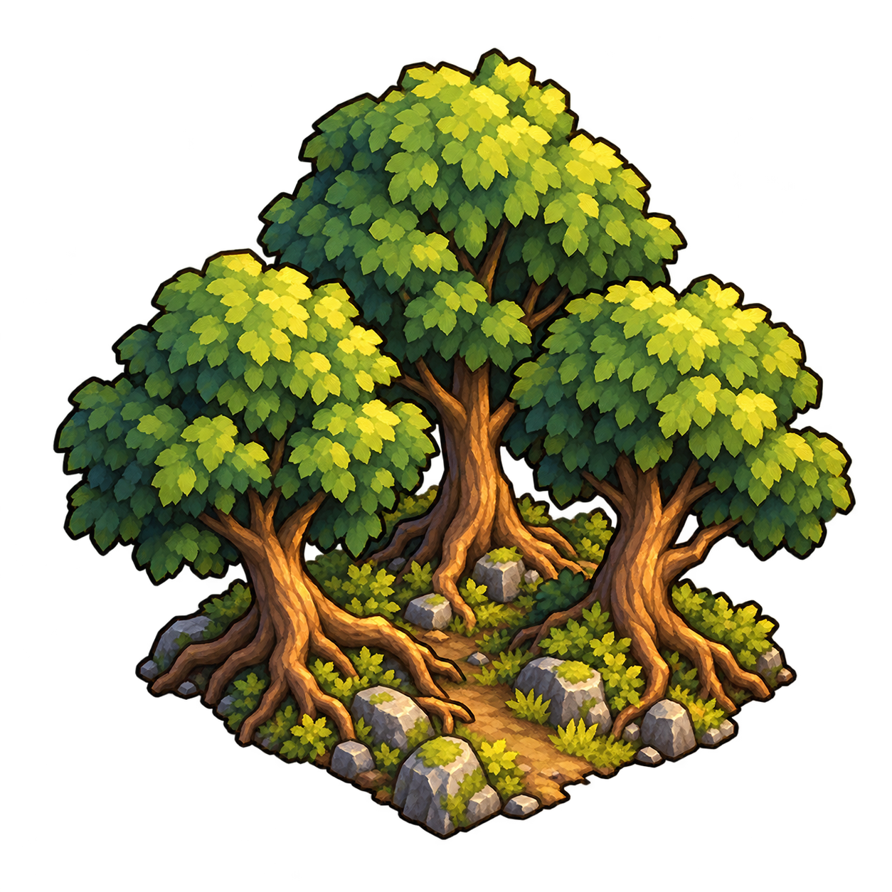

Règles et fonctionnement
Blocs de terrain et zones constructibles
Comprendre les blocs 3 × 3, leur fusion et la construction d’un seul camp par zone.
Comprendre ce que cela implique
Les nouvelles cartes utilisent des blocs fixes de 3 × 3 cases, sans chevauchement. Le centre porte un seul type : vide, bois, pierre, terre fertile, fer, or, trésor, artefact ou donjon. Au moins 50 % des blocs admissibles restent vides et chacun des huit contenus non vides est présent au moins une fois. Avec les deux options activées, il faut donc au moins 16 blocs complets hors influence des lieux et des zones interdites ; en dessous de ce seuil, le minimum par type est désactivé et la carte est créée sans ressources naturelles ni sites exceptionnels supplémentaires. Les lieux du scénario sont conservés. Les blocs de même ressource partageant un côté fusionnent, transitivement, en une zone limitée à un camp actif pour tous les joueurs. Un contact par un coin ne fusionne pas les blocs. Le camp peut occuper toute case connue et disponible de cette zone, et hérite de sa ressource même hors du centre. Découvrir un bloc rend ses neuf cases connues ; les extensions inconnues de la zone restent cachées. Les marqueurs restent au centre et des contours discrets délimitent les blocs connus et les zones fusionnées. Les sauvegardes existantes conservent leur ancien terrain.
Deux options de partie indépendantes, cochées par défaut, contrôlent les contenus supplémentaires : Ressources naturelles (bois, pierre, terre fertile, fer, or) et Trésors et sites exceptionnels (trésors, artefacts, donjons). L’organisateur les choisit avant le lancement ; les mêmes réglages existent pour le test sur carte fictive. Les lieux du scénario sont conservés. Le serveur génère uniquement les catégories activées, avec au moins 50 % de blocs vides et un exemplaire de chaque type activé si la place le permet. Il faut 16 blocs admissibles avec les deux options, 10 avec les ressources seules, 6 avec les sites seuls. Sous le seuil applicable, aucun contenu supplémentaire n’est généré. Si les deux options sont désactivées, tous les blocs restent vides. Une reprise conserve le terrain sauvegardé sans nouveau tirage.

Dans cet article
Détails de référence
Texte de référence mis en forme et conservé dans l’historique de cet article. Les paragraphes datés peuvent décrire une évolution ou une étape antérieure.
Les nouvelles cartes utilisent des blocs fixes de 3 × 3 cases, sans chevauchement. Le centre porte un seul type : vide, bois, pierre, terre fertile, fer, or, trésor, artefact ou donjon. Avec les deux options activées, au moins 50 % des blocs admissibles restent vides et chacun des huit contenus non vides est présent au moins une fois. Avec les deux options activées, il faut donc au moins 16 blocs complets hors influence des lieux et des zones interdites ; en dessous de ce seuil, le minimum par type est désactivé et la carte est créée sans ressources naturelles ni sites exceptionnels supplémentaires. Les lieux du scénario sont conservés. Les blocs de même ressource partageant un côté fusionnent, transitivement, en une zone limitée à un camp actif pour tous les joueurs. Un contact par un coin ne fusionne pas les blocs. Le camp peut occuper toute case connue et disponible de cette zone, et hérite de sa ressource même hors du centre. Découvrir un bloc rend ses neuf cases connues ; les extensions inconnues de la zone restent cachées. Les marqueurs restent au centre et des contours discrets délimitent les blocs connus et les zones fusionnées. Les sauvegardes existantes conservent leur ancien terrain.
| Propriété | Règle |
|---|---|
| Bloc | 3 × 3 cases ; 9 cases distinctes |
| Échelle GPS habituelle | Case de 15 m ; bloc de 45 × 45 m, soit 2 025 m² |
| Vide minimal | 50 % des blocs admissibles, arrondi au supérieur |
| Diversité minimale | Un bois, une pierre, une terre fertile, un fer, un or, un trésor, un artefact et un donjon |
| Seuil des contenus supplémentaires | 16 blocs complets et admissibles ; en dessous, carte créée sans ressources ni sites exceptionnels supplémentaires. 32 400 m² est une borne théorique avant bordures, forme et exclusions |
| Fusion | Même ressource et côté partagé ; fusion transitive |
| Construction | Un camp actif par zone fusionnée ; un camp par bloc vide ; aucune fondation dans un bloc exceptionnel ou incomplet |
Répartition des nouvelles cartes
Les poids cibles sont : vide 50 %, bois 16 %, pierre 12 %, terre fertile 9,6 %, fer 4,8 %, or 1,6 %, trésor 3 %, artefact 2 %, donjon 1 %. Le serveur réserve la moitié des blocs admissibles au vide, puis répartit le quota occupé avec ces poids et au moins un exemplaire de chaque contenu. Ce sont des objectifs de répartition, pas des chances de découverte. Les petits terrains ont proportionnellement plus de contenus rares pour respecter les minimums. La graine privée détermine les positions ; recharger la partie ne relance aucun tirage.
Seuls les carrés de neuf cases entièrement contenus dans le terrain et hors de tout trou interdit sont des blocs. Les bordures incomplètes restent vides et non constructibles. Une portée de lieu normal qui touche une des neuf cases exclut tout le bloc de la génération des contenus. Les blocs ainsi neutralisés restent vides. Les grandes aires gardent l’adaptation existante de la taille des cases : leurs blocs peuvent dépasser 45 mètres.
Découvrir et construire
Une prospection qui traverse un bloc en révèle les cases. Un spécialiste peut reconnaître une ressource depuis une case périphérique : un seul essai est mémorisé par joueur, bloc et spécialité. Les probabilités de spécialité existantes sont conservées. Le serveur ne transmet pas les blocs encore inconnus de la zone fusionnée. Pour les sites exceptionnels, les cartes continuent de désigner la case centrale ; les recherches et récupérations gardent leurs conditions existantes.
Après découverte, choisissez une case du bloc pour fonder le camp sur place ou envoyer une installation depuis un poste de prospection. Les coûts, la présence, les distances, les exclusions et les moyens restent validés par le serveur. Les neuf positions sont possibles dans le bloc, sans garantie qu’elles restent toutes disponibles si un autre lieu les neutralise. La ressource de la zone détermine les évolutions : une case périphérique d’un bloc de fer autorise bien la mine de fer.
Un camp existant bloque toutes les cases de la même zone, même pour un autre joueur ou un autre bloc encore inconnu. Une expédition du même joueur vers cette zone ne peut pas être doublée sur une autre case. La disponibilité est recontrôlée à l’arrivée : une expédition concurrente ne crée jamais de deuxième camp et rapporte ses moyens restants. Le camp conserve les gisements de sa propre zone malgré son influence ; les autres cellules couvertes sont neutralisées et les sites exceptionnels touchés sont clôturés sans butin.
Exemple
Deux blocs de bois voisins par un côté forment une zone de 18 cases, avec deux marqueurs centraux. Le joueur peut choisir une case disponible parmi les blocs qu’il a découverts, mais la zone entière n’accepte qu’un camp. Un troisième bloc de bois relié au second rejoint la même zone. Un bloc de pierre voisin reste une autre zone ; un bloc de bois qui ne touche que par un coin reste également distinct.
Les règles de coûts et de développement restent dans Fonder et spécialiser un camp. Les conditions de génération et la supervision du Dashboard décrivent la sauvegarde et l’affichage.
2 novembre 2026 — génération par blocs fixes, quota de vide, diversité minimale, fusion et construction par zone.
Options de partie — 3 novembre 2026
Deux options de partie indépendantes, cochées par défaut, contrôlent les contenus supplémentaires : Ressources naturelles (bois, pierre, terre fertile, fer, or) et Trésors et sites exceptionnels (trésors, artefacts, donjons). L’organisateur les choisit avant le lancement ; les mêmes réglages existent pour le test sur carte fictive. Les lieux du scénario sont conservés. Le serveur génère uniquement les catégories activées, avec au moins 50 % de blocs vides et un exemplaire de chaque type activé si la place le permet. Il faut 16 blocs admissibles avec les deux options, 10 avec les ressources seules, 6 avec les sites seuls. Sous le seuil applicable, aucun contenu supplémentaire n’est généré. Si les deux options sont désactivées, tous les blocs restent vides. Une reprise conserve le terrain sauvegardé sans nouveau tirage.